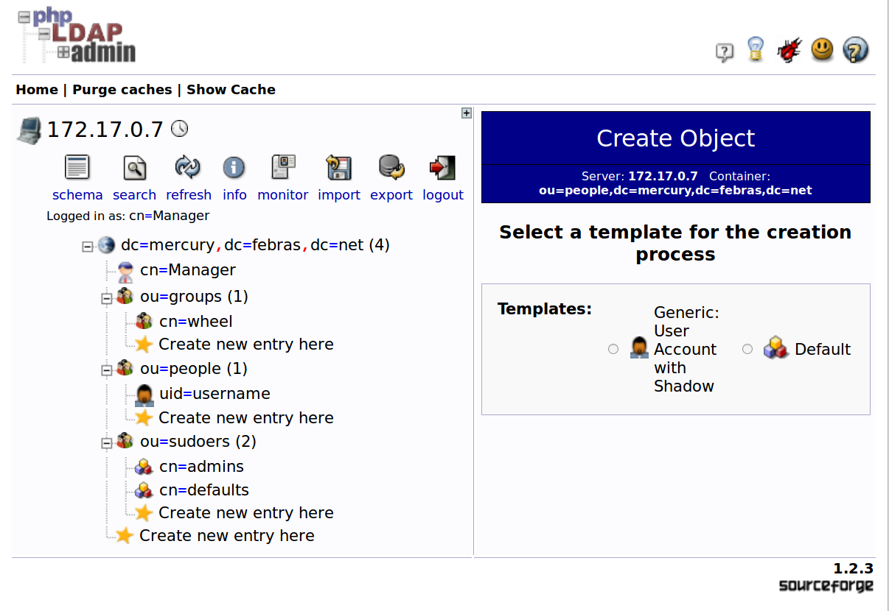

Аутентификация пользователей CentOS 5/6 с использованием OpenLDAP 2.3/2.4
Содержание
- Введение
- 1. Установка и настройка сервера OpenLDAP
- 2. Настройка аутентификации пользователей при помощи LDAP
- 3. Схема БД LDAP
- 4. Процесс добавления нового пользователя в систему
- 5. Перевести аутентификацию пользователей кластера на использование LDAP
Введение
В процессе написания использовались материалы
Конфигурация используемых на нашем демо-стенде контейнеров:
| Роль | Имя контейнера | ОС | Способ конфигурации OpenLDAP |
|---|---|---|---|
| Сервер каталогов | server-ldif5 | Centos 5 | OpenLDAP 2.3 server, ldif |
| Сервер каталогов | server-ldif6 | Centos 6 | OpenLDAP 2.4 server, ldif |
| Сервер каталогов | server-conf5 | Centos 5 | OpenLDAP 2.3 server, conf |
| Сервер каталогов | server-conf6 | Centos 6 | OpenLDAP 2.4 server, conf |
| Клиентский хост | client5 | Centos 5 | OpenLDAP 2.3 client |
| Клиентский хост | client6 | Centos 6 | OpenLDAP 2.4 client |
Команды и конфигурационные файлы прошли проверку на работоспособность в тестовом программном окружении, доступном в проекте cc-ldap-centos.
1 Установка и настройка сервера OpenLDAP
Необходимо разработать документацию по установке и настройке сервера LDAP в ОС CentOS 5. Предпочтение отдавать реализациям, доступным в базовом репозитории дистрибутива. Проверить работоспособность выработанных инструкций в ОС CentOS 6.
1.1 Установка OpenLDAP
Базовые репозитории дистрибутивов CentOS 5 и CentOS 6 содержат 2.3 и 2.4 версию OpenLDAP, соответственно. Выполнив стандартную установку
yum -y install openldap openldap-servers openldap-clients sudo
получаем две конфигурации, различающиеся в некоторых деталях. Например, название сервиса: ldap в случае CentOS 5/2.3 OpenLDAP (5/2.3) и slapd в случае CentOS 6/2.4 OpenLDAP (6/2.4).
1.2 Добавление файлов конфигурации базы данных HDB
Для запуска сервиса ldap (slapd) необходимо подготовить каталог и файл конфигурации базы данных. Расположение образца файла настройки, в 5/2.3
cp /etc/openldap/DB_CONFIG.example /var/lib/ldap/DB_CONFIG
chown ldap. /var/lib/ldap/DB_CONFIG
а в 6/2.4
cp /usr/share/openldap-servers/DB_CONFIG.example /var/lib/ldap/DB_CONFIG
chown ldap. /var/lib/ldap/DB_CONFIG
Используем настройки без изменений в обеих конфигурациях.
1.3 Добавление файлов схем
Общая схема БД LDAP, в том числе, содержит раздел cn=schema, куда подключаются дополнительные специфические схемы. Подготовим необходимые файлы (не включенные в поставку OpenLDAP), для 5/2.3
cp /usr/share/doc/sudo-1.7.2p1/schema.OpenLDAP /etc/openldap/schema/sudo.schema
chown ldap. /etc/openldap/schema/sudo.schema
и для 6/2.4
cp /usr/share/doc/sudo-1.8.6p3/schema.OpenLDAP /etc/openldap/schema/sudo.schema
chown ldap. /etc/openldap/schema/sudo.schema
1.4 Выбор варианта настройки схемы БД LDAP
Конфигурация 6/2.4 поставляется с тремя вариантами базовых настроек, осуществляемых через файлы slapd.conf.obsolete, slapd.ldif.example и, доступным по умолчанию, предварительно сформированным каталогом slapd.d. При этом, настройка с помощью slapd.ldif.example подразумевает использование утилиты slapadd, как это рекомендуется в разделе руководства "быстрый старт"1. Конфигурация 5/2.3 по умолчанию настраивается только файлом slapd.conf, предварительно сформированный каталог slapd.d в формате ldif отсутствует. Такой подход считается устаревшим, рекомендуется2 использовать ldif формат и преобразовывать slapd.conf файл настройки в каталог slapd.d с помощью утилиты slaptest.
Все варианты настроек разделяются на два существенно отличающихся способа. Первый включает в себя настройку через conf файлы ( конвертация через slaptest) и предварительно сформированный каталог slapd.d (только для версии 2.4). Эти варианты являются взаимозаменяемыми и формируют практически идентичные результирующие файлы каталога slapd.d. Второй способ заключается в использовании файла slapd.ldif и утилиты slapdd. В этом случае, содержимое файлов каталога slapd.d существенно отличается, по сравнению с первым способом. Дело в том, что при использовании первого способа в файлах каталога slapd.d присутствует большое количество дополнительных параметров (явно не указанных в файле slapd.conf), а при использовании второго — только те, которые явно прописываются в файле slapd.ldif. Хотя, здесь обнаружилось и небольшое исключение для записи frontend.
| Способы настройки | поддержка ldif | 2.3 | 2.4 |
|---|---|---|---|
| Настройка с помощью файла slapd.conf | конвертация slaptest | да | да |
| Настройка с помощью файла slapd.ldif | да | особо | особо |
| Предварительно сформированный каталог slapd.d | да | нет | да |
Какой вариант настройки выбрать? Если требуется наличие тех дополнительных параметров, которые разработчики посчитали нужным включить в настройки по умолчанию, то выбирается первый способ настройки — основной. При этом, если выбирается 2.3 версия OpenLDAP, то используются slapd.conf файл и утилита slaptest. А если 2.4 версия, то можно в качестве равноценной альтернативы воспользоваться предварительно сформированным каталогом slapd.d.
Если же потребуется тщательно настраивать конфигурацию с нуля, полностью контролируя все параметры, которые будут задействованы, то нужно воспользоваться вторым способом — дополнительным.
1.5 Предварительная настройка схемы БД LDAP
Продемонстрируем первый способ настройки. Внесем небольшие изменения в конфигурационный файл для 5/2.3
8a9 > include /etc/openldap/schema/sudo.schema 83a85,87 > database config > rootdn "cn=Manager,cn=config" > rootpw {SSHA}GJsR+eNVKIwqK4ef6lmAo58pHjgLkIx+ 85c89,91 < database bdb --- > database monitor > > database hdb
и произведем первый запуск сервиса
mv /etc/openldap/slapd.conf /etc/openldap/slapd.conf.original
cp /root/slapd.conf /etc/openldap/slapd.conf
ROOT_PWD=$(slappasswd -s $LDAP_ROOT_PASSWORD)
# Use bash variable substitution to escape special chars http://stackoverflow.com/a/14339705
sed -i "s+%LDAP_ROOT_PASSWORD%+${ROOT_PWD//+/\\+}+" /etc/openldap/slapd.conf
chown ldap. /etc/openldap/slapd.conf
diff /etc/openldap/slapd.conf.original /etc/openldap/slapd.conf > /gen/slapd.diff || true
service ldap start
Выполним аналогичные действия для 6/2.4
17a18 > include /etc/openldap/schema/sudo.schema 102a104,106 > rootdn "cn=Manager,cn=config" > rootpw {SSHA}aAS4N23RBN7Bl7DNO0S4TykVh5v9YY6G > 114c118 < database bdb --- > database hdb
cp /root/slapd.conf.obsolete /etc/openldap/slapd.conf
ROOT_PWD=$(slappasswd -s $LDAP_ROOT_PASSWORD)
# Use bash variable substitution to escape special chars http://stackoverflow.com/a/14339705
sed -i "s+%LDAP_ROOT_PASSWORD%+${ROOT_PWD//+/\\+}+" /etc/openldap/slapd.conf
chown ldap. /etc/openldap/slapd.conf
rm -rf /etc/openldap/slapd.d
diff /usr/share/openldap-servers/slapd.conf.obsolete /etc/openldap/slapd.conf > /gen/slapd.obsolete.diff || true
service slapd start
Теперь для обеих конфигураций можно осуществить переход к cn=config формату и избавиться от slapd.conf
sleep 3
kill -INT `cat /var/run/openldap/slapd.pid`
rm -rf /etc/openldap/slapd.d
oldpath=`pwd`
cd /etc/openldap
mkdir slapd.d
slaptest -f slapd.conf -F slapd.d
chown -R ldap:ldap slapd.d
chmod -R 0750 slapd.d
mv slapd.conf slapd.conf.bak
cd $oldpath
После перезапуска, для 5/2.3
service ldap start
и для 6/2.4
service slapd start
получаем сервисы, отличающиеся только настройками по умолчанию, поставляемыми из базовых репозиториев в файлах /etc/openldap/slapd.conf (5/2.3) и /usr/share/openldap-servers/slapd.conf.obsolete (6/2.4).
Дальнейшая настройка схемы осуществляется в разделе 3.
1.6 Дополнительно. Предварительная настройка схемы БД LDAP с помощью ldif формата
Продемонстрируем второй способ настройки для обеих конфигураций.
Конфигурация 5/2.3 поставляется со схемами только в schema формате, а 6/2.4 — как в schema, так и в ldif формате. Файл sudo.schema доступен только в schema формате. С помощью скрипта 2.5-schema-ldif.sh3 преобразуем необходимые схемы. Чтобы иметь доступ к серверу LDAP для конфигурирования схемы БД LDAP, пропишем пароль менеджера схемы cn=Manager,cn=config. Пользователь rootdn имеет права на чтение и запись для всего содержимого. Кроме того, добавим минимальные настройки для monitor и настроим базу hdb. Используем "оффлайновую" утилиту slapadd для создания минимума конфигурационных настроек, позволяющих запустить сервер.
rm -rf /etc/openldap/slapd.d
rm -f /etc/openldap/slapd.conf
mkdir -p /etc/openldap/slapd.d
oldpath=`pwd`
cd /etc/openldap/schema
SCHEMAD=`pwd` SCHEMAS='core.schema cosine.schema inetorgperson.schema nis.schema sudo.schema' /root/2.5-schema-ldif.sh
cp -R /etc/openldap/schema /gen/schema
cd $oldpath
ROOT_PWD=$(slappasswd -s $LDAP_ROOT_PASSWORD)
# Use bash variable substitution to escape special chars http://stackoverflow.com/a/14339705
sed -i "s+%LDAP_ROOT_PASSWORD%+${ROOT_PWD//+/\\+}+" /root/slapd.ldif
slapadd -b cn=config -F /etc/openldap/slapd.d -l /root/slapd.ldif || true
chown -R ldap. /etc/openldap/slapd.d/
dn: cn=config objectClass: olcGlobal olcPidFile: /var/run/openldap/slapd.pid olcArgsFile: /var/run/openldap/slapd.args cn: config dn: olcDatabase={0}config,cn=config objectClass: olcDatabaseConfig olcDatabase: {0}config olcRootDN: cn=Manager,cn=config olcRootPW: %LDAP_ROOT_PASSWORD% dn: cn=schema,cn=config objectClass: olcSchemaConfig cn: schema include: file:///etc/openldap/schema/core.ldif include: file:///etc/openldap/schema/cosine.ldif include: file:///etc/openldap/schema/inetorgperson.ldif include: file:///etc/openldap/schema/nis.ldif include: file:///etc/openldap/schema/sudo.ldif dn: olcDatabase=monitor,cn=config objectClass: olcDatabaseConfig olcDatabase: monitor dn: olcDatabase=hdb,cn=config objectClass: olcDatabaseConfig objectClass: olcHdbConfig olcDatabase: hdb olcSuffix: dc=my-domain,dc=com olcRootDN: cn=Manager,dc=my-domain,dc=com olcDbDirectory: /var/lib/ldap olcDbIndex: objectClass eq,pres olcDbIndex: ou,cn,mail,surname,givenname eq,pres,sub olcDbIndex: uidNumber,gidNumber,loginShell eq,pres olcDbIndex: uid,memberUid eq,pres,sub olcDbIndex: nisMapName,nisMapEntry eq,pres,sub
После перезапуска, для 5/2.3
service ldap start
и для 6/2.4
service slapd start
получаем сервисы, отличающиеся только настройками схемы, содержащимися в исходных кодах разных версий OpenLDAP. Например, для конфигурации 5/2.3 требуется добавить настройки frontend базы, а для 6/2.4 эти настройки добавляются автоматически из исходного кода OpenLDAP (что, кстати говоря, несколько нарушает прозрачность — появляется то, что явно не указано в slapd.ldif файле). Вероятно, это потому, что версия 2.4 официально поддерживает конфигурирование с помощью slapadd и ldif формат. Для версии 2.3 официально поддерживаемым является способ конфигурирования через conf файл. Все дальнейшие изменения уже осуществляются с помощью "онлайновых" утилит ldapadd и ldapmodify.
sleep 2
ldapadd -v -D cn=Manager,cn=config -f /root/front.ldif -x -w $LDAP_ROOT_PASSWORD || true
Специальная база данных frontend содержит настройки, которые применяются глобально ко всем остальным базам данных. В нашем случае это база hdb.
dn: olcDatabase={-1}frontend,cn=config objectClass: olcDatabaseConfig objectClass: olcFrontendConfig olcSchemaDN: cn=Subschema olcDatabase: {-1}frontend
Дальнейшая настройка схемы осуществляется в разделе 3.
2 Настройка аутентификации пользователей при помощи LDAP
Необходимо разработать документацию по настройке аутентификации пользователей при помощи LDAP в ОС CentOS 5. Проверить работоспособность выработанных инструкций в ОС CentOS 6.
В документацию должно входить:
- Список пакетов, которые необходимо установить;
- Список файлов, модификация которых необходима для настройки процесса аутентификации посредством LDAP;
- Описание всех опций, выставляемых в этих файлах.
Рассмотрим три задачи, возникающие при настройке аутентификации пользователей при помощи LDAP. Чтобы провести аутентификацию пользователя необходимо, чтобы клиентский хост имел право на чтение пользовательских данных на сервере LDAP. Для этого потребуется обеспечить механизм аутентификации клиентского хоста при помощи LDAP. Далее следует основная задача — это, собственно, настройка аутентификации пользователей в системе при помощи LDAP. И, наконец, вспомогательная задача аутентификации пользователя с повышением прав.
2.1 Требуемые пакеты
Для настройки клиентского подключения в 5/2.3 понадобятся следующие пакеты
yum install -y openssh-server openldap-clients nss_ldap authconfig yum install -y openldap openldap-servers sudo
Здесь также необходим пакет openldap-servers, поскольку утилиты для миграции пользователей содержатся в нем. Для 6/2.4 выполним
yum install -y openssh-server openldap-clients nss-pam-ldapd authconfig yum install -y openldap migrationtools sudo
2.2 Используемые команды
Воспользуемся утилитой authconfig для настройки аутентификации пользователей при помощи LDAP.
В конфигурации 5/2.3 приходится использовать параметр enableshadow, поскольку эта функциональность отключена по умолчанию. Отдельно укажем параметр sudoers_base и параметры binddn и bindpw в настройках для pam_ldap.
authconfig --enableshadow --enablemkhomedir --enableldap --enableldapauth \ --ldapserver=$LDAP_SERVER --ldapbasedn=$LDAP_BASEDN --update echo sudoers_base dc=mercury,dc=febras,dc=net >> /etc/ldap.conf echo sudoers_debug 0 >> /etc/ldap.conf echo binddn cn=authenticator,dc=mercury,dc=febras,dc=net >> /etc/ldap.conf echo bindpw secret >> /etc/ldap.conf
Для конфигурации 6/2.4 приходится отдельно прописывать параметр sudoers для nsswitch.conf, а в конфигурации 5/2.3 он уже появляется после установки пакетов, еще до запуска authconfig. Для настройки sudo дополнительно указываются параметры uri и base, поскольку файл теперь другой — sudo-ldap.conf. А параметры binddn и bindpw необходимо указать в 3х файлах: nslcd.conf, pam_ldap.conf и sudo-ldap.conf.
authconfig --enablemkhomedir --enableldap --enableldapauth \ --ldapserver=$LDAP_SERVER --ldapbasedn=$LDAP_BASEDN --update echo sudoers: files ldap >> /etc/nsswitch.conf echo uri ldap://$LDAP_SERVER/ >> /etc/sudo-ldap.conf echo base dc=mercury,dc=febras,dc=net >> /etc/sudo-ldap.conf echo sudoers_base dc=mercury,dc=febras,dc=net >> /etc/sudo-ldap.conf echo sudoers_debug 0 >> /etc/sudo-ldap.conf echo binddn cn=authenticator,dc=mercury,dc=febras,dc=net >> /etc/sudo-ldap.conf echo bindpw secret >> /etc/sudo-ldap.conf echo binddn cn=authenticator,dc=mercury,dc=febras,dc=net >> /etc/pam_ldap.conf echo bindpw secret >> /etc/pam_ldap.conf echo binddn cn=authenticator,dc=mercury,dc=febras,dc=net >> /etc/nslcd.conf echo bindpw secret >> /etc/nslcd.conf /etc/init.d/nslcd stop rm /var/run/nslcd/* /etc/init.d/nslcd start
2.3 Изменяемые файлы
Файлы, которые были модифицированы настройками раздела 2.2 в случае 5/2.3
- nsswitch.conf — файл с настройками системных баз данных (в т.ч. порядка их просмотра) для диспетчера службы имен. Можно указывать спецификации службы, такие как files, ldap.
- /etc/ldap.conf — конфигурационный файл для pam_ldap.
- /etc/openldap/ldap.conf — конфигурационный файл для установки общесистемных настроек ldap-клиентов.
- system-auth — назначением этого файла является обеспечение общей конфигурации для всех приложений и сервисов, вызывающих библиотеку PAM.
/etc/group /etc/group- /etc/gshadow /etc/ldap.conf /etc/nsswitch.conf /etc/openldap/ldap.conf /etc/pam.d/system-auth /etc/pam.d/system-auth-ac /etc/passwd /etc/passwd- /etc/shadow /etc/sysconfig/authconfig
Здесь в файлах group, group-, gshadow, shadow, passwd-, passwd — несущественные изменения, связанные с опцией enableshadow и с добавлением ldap; system-auth-ac и system-auth это один и тот же файл; файл authconfig просто содержит все опции, указанные при конфигурировании.
Для конфигурации 6/2.4, кроме файлов nsswitch.conf, /etc/openldap/ldap.conf и system-auth, задействуются:
- nslcd.conf — конфигурационный файл для службы сервиса имен LDAP.
- Файлы, аналогичные system-auth. Они содержат только модули, которые выполняют аутентификацию с соответствующим видом аутентификационных токенов. Файлы fingerprint-auth и smartcard-auth нас не интересуют, а содержимое password-auth полностью идентично содержимому system-auth.
- pam_ldap.conf — конфигурационный файл для pam_ldap.
- sudo-ldap.conf — ldap-специфичная конфигурация для sudo. В случае конфигурации 5/2.3 для этого использовался файл /etc/ldap.conf.
/etc/nslcd.conf /etc/nsswitch.conf /etc/openldap/cacerts /etc/openldap/ldap.conf /etc/pam.d/fingerprint-auth /etc/pam.d/fingerprint-auth-ac /etc/pam.d/password-auth /etc/pam.d/password-auth-ac /etc/pam.d/smartcard-auth /etc/pam.d/smartcard-auth-ac /etc/pam.d/system-auth /etc/pam.d/system-auth-ac /etc/pam_ldap.conf /etc/sudo-ldap.conf /etc/sysconfig/authconfig
2.4 Описание опций
2.4.1 PAM: необходимые сведения
Утилита authconfig осуществляет необходимую модификацию PAM (Pluggable Authentication Modules), добавляя библиотеку pam_ldap.so и дополнительные настройки, обеспечивающие поддержку механизма аутентификации средствами LDAP. PAM — это стандартный интерфейс, который может работать как с локальными базами данных files, так и c базой ldap.
С точки зрения PAM, аутентификация состоит из нескольких независимых задач:
- account (управление учетными записями) — описывает службу проверки учетной записи, которая отвечает на вопросы: "есть ли такая запись и не истек ли срок действия пароля?", "имеет ли пользователь право доступа к запрошенному ресурсу?"
- auth (управление аутентификацией) — описывает службу проверки идентичности пользователя. Эта служба реализована посредством диалога между пользователем и программой аутентификации: "как тебя зовут и какой у тебя пароль?".
- password (управление паролями) — описывает службу изменения пароля; такая служба должна быть тесно связана со службой проверки учетной записи. Например, по истечении срока действия пароля система требует у пользователя новый пароль.
- session (управление сессиями) — описывает работы, которые должны быть выполнены до того, как ресурс будет предоставлен, или после того, как он будет освобожден (например, после разрыва соединения между программой-клиентом и вызванной им службой-сервером). Скажем, это может быть протоколирование начала и конца соединения, монтирование домашнего каталога пользователя и т.п.
Поведение модулей аутентификации в стеке:
- requisite — отказ приводит к немедленному прекращению аутентификации;
- required — отказ приводит к тому, что PAM API возвращает ошибку, но только после того, как будут вызваны все оставшиеся в стеке модули (для этого приложения);
- sufficient — успешная аутентификация достаточна для удовлетворения требований по аутентификации стека модулей (если предыдущий модуль в стеке выдал отказ в аутентификации, то успех аутентификации текущего модуля игнорируется);
- optional — успех или отказ в аутентификации с использованием данного модуля имеет значение, только если это единственный модуль в стеке, ассоциированном с данным приложением и типом аутентификации (т.е. нет других optional модулей).
2.4.2 Опции, связанные с conf-файлами для 5/2.3
/etc/ldap.conf. Параметр host не рекомендуется к использованию, используется параметр uri, который указывает адрес LDAP сервера и протокол, по которому осуществляется взаимодействие. Остальные параметры понятны: SSL не используется, ожидается md5 шифрование для паролей в PAM.
nsswitch.conf. Для баз данных passwd, shadow, group, netgroup и automount добавляется спецификация службы ldap.
/etc/ldap.conf 17c17 < host 127.0.0.1 --- > #host 127.0.0.1 20c20 < base dc=example,dc=com --- > base dc=mercury,dc=febras,dc=net 295a296,303 > uri ldap://172.17.0.4/ > ssl no > tls_cacertdir /etc/openldap/cacerts > pam_password md5 > sudoers_base dc=mercury,dc=febras,dc=net > sudoers_debug 0 > binddn cn=authenticator,dc=mercury,dc=febras,dc=net > bindpw secret /etc/nsswitch.conf 33,35c33,35 < passwd: files < shadow: files < group: files --- > passwd: files ldap > shadow: files ldap > group: files ldap 57c57 < netgroup: nisplus --- > netgroup: files ldap 61c61 < automount: files nisplus --- > automount: files ldap /etc/openldap/ldap.conf 13a14,16 > URI ldap://172.17.0.4/ > BASE dc=mercury,dc=febras,dc=net > TLS_CACERTDIR /etc/openldap/cacerts
2.4.3 Опции, связанные с system-auth для 5/2.3
system-auth. Наибольшее количество изменений вносится в этот файл.
- auth
- sufficient pam_unix.so: порядок опций не важен. Без изменения.
- requisite pam_succeed_if.so: проверяет характеристику uid аккаунта, не записывая ничего в системный log-файл
- sufficient pam_ldap.so: pam_ldap должен всегда использовать первый пароль, доступный в аутентификационном стеке
- account
- required pam_unix.so: игнорируются ошибки чтения shadow информации
- sufficient pam_succeed_if.so:
/etc/pam.d/system-auth 5c5,7 < auth sufficient pam_unix.so try_first_pass nullok --- > auth sufficient pam_unix.so nullok try_first_pass > auth requisite pam_succeed_if.so uid >= 500 quiet > auth sufficient pam_ldap.so use_first_pass 8c10,13 < account required pam_unix.so --- > account required pam_unix.so broken_shadow > account sufficient pam_succeed_if.so uid < 500 quiet > account [default=bad success=ok user_unknown=ignore] pam_ldap.so > account required pam_permit.so 10,11c15,17 < password required pam_cracklib.so try_first_pass retry=3 < password sufficient pam_unix.so try_first_pass use_authtok nullok md5 --- > password requisite pam_cracklib.so try_first_pass retry=3 > password sufficient pam_unix.so md5 shadow nullok try_first_pass use_authtok > password sufficient pam_ldap.so use_authtok 15a22 > session optional pam_mkhomedir.so 17a25 > session optional pam_ldap.so
2.4.4 Опции, связанные с conf-файлами для 6/2.4
В файлах nslcd.conf, pam_ldap.conf и sudo-ldap.conf дублируются стандартные опции.
/etc/nslcd.conf 131,132c131,136 < uri ldap://127.0.0.1/ < base dc=example,dc=com --- > uri ldap://172.17.0.2/ > base dc=mercury,dc=febras,dc=net > ssl no > tls_cacertdir /etc/openldap/cacerts > binddn cn=authenticator,dc=mercury,dc=febras,dc=net > bindpw secret /etc/nsswitch.conf 33,35c33,35 < passwd: files < shadow: files < group: files --- > passwd: files ldap > shadow: files ldap > group: files ldap 57c57 < netgroup: nisplus --- > netgroup: files ldap 61c61 < automount: files nisplus --- > automount: files ldap 63a64 > sudoers: files ldap /etc/openldap/ldap.conf 15c15,17 < TLS_CACERTDIR /etc/openldap/certs --- > TLS_CACERTDIR /etc/openldap/cacerts > URI ldap://172.17.0.2/ > BASE dc=mercury,dc=febras,dc=net
2.4.5 Опции, связанные с system-auth для 6/2.4
/etc/pam.d/system-auth 5c5,7 < auth sufficient pam_unix.so try_first_pass nullok --- > auth sufficient pam_unix.so nullok try_first_pass > auth requisite pam_succeed_if.so uid >= 500 quiet > auth sufficient pam_ldap.so use_first_pass 8c10,14 < account required pam_unix.so --- > account required pam_unix.so broken_shadow > account sufficient pam_localuser.so > account sufficient pam_succeed_if.so uid < 500 quiet > account [default=bad success=ok user_unknown=ignore] pam_ldap.so > account required pam_permit.so 11c17,18 < password sufficient pam_unix.so try_first_pass use_authtok nullok sha512 shadow --- > password sufficient pam_unix.so sha512 shadow nullok try_first_pass use_authtok > password sufficient pam_ldap.so use_authtok 15a23 > session optional pam_mkhomedir.so umask=0077 17a26 > session optional pam_ldap.so /etc/pam_ldap.conf 17c17 < host 127.0.0.1 --- > #host 127.0.0.1 20c20 < base dc=example,dc=com --- > base dc=mercury,dc=febras,dc=net 289a290,295 > uri ldap://172.17.0.2/ > ssl no > tls_cacertdir /etc/openldap/cacerts > pam_password md5 > binddn cn=authenticator,dc=mercury,dc=febras,dc=net > bindpw secret /etc/sudo-ldap.conf 86a87,92 > uri ldap://172.17.0.2/ > base dc=mercury,dc=febras,dc=net > sudoers_base dc=mercury,dc=febras,dc=net > sudoers_debug 0 > binddn cn=authenticator,dc=mercury,dc=febras,dc=net > bindpw secret
3 Схема БД LDAP
Необходимо разработать схему БД LDAP, предназначенную для хранения учетных данных пользователей кластера.
Использование только ldif формата позволяет единообразно конфигурировать схему LDAP, начиная с корневой записи DIT (Directory Information Tree) cn=config и заканчивая листьями этого дерева — записями, содержащими нужную информацию:
| slapd.ldif | формирование корневой записи DIT и контейнера для наборов схем данных; конфигурирование базы данных hdb и подключение мониторинга баз данных |
| front.ldif | добавление служебной базы данных frontend (только для 5/2.3) |
| domain.ldif | установка суффикса, менеджера базы hdb и его пароля, и ACL для базы hdb |
| base.ldif | настройка корневого суффикса, менеджера, организационных единиц и пользователя authenticator |
| sudo.ldif | настройка организационной единицы sudoers, добавление группы wheel |
| user.ldif | создание нового пользователя |
Если же используется conf формат, то надо иметь в виду, что просто стартовая часть этого стройного ряда конфигурационных файлов заменяется на slapd.conf.
3.1 Возможности LDAP
Возможности протокола LDAP значительно определяются схемами, которые можно подключить с помощью директивы include. Помня об основной цели, рассмотрим типичные задачи, которые можно решить с их помощью. В первую очередь нас интересуют уже готовые схемы, входящие в дистрибутив OpenLDAP или разработанные сторонними поставщиками.
- OpenLDAP и Ubuntu на практике
- Управление пользователями и группами в OpenLDAP
- Настройка аутентификации пользователей через OpenLDAP на клиенте
- Настройка OpenLDAP в качестве хранилища правил sudo (sudo.schema)
- OpenLDAP как хранилище карт автоматического монтирования для autofs (autofs.schema)
- Репозиторий NFS netgroup на основе OpenLDAP для autofs (расширение возможностей стандартной схемы nis.schema)
- FusionDirectory
- Управление пользователями
- Управление квотами пользователей
- Управление ssh ключами, сертификатами пользователей
- Управление учетными записями сервисов почты, Samba, Nagios, Squid и т.д.
- Управление системами
- Тонкие клиенты, десктопы, серверы, voip, сетевые и мобильные устройства
- Управление сервисами
- Управление сервисами DHCP, DNS, Web management interface
- Управление репозиториями
- Управление пользователями
3.2 Подготовка к тестированию аутентификации при помощи LDAP
Чтобы получить минимально работоспособный сервер LDAP, позволяющий осуществлять аутентификацию для клиентских систем, внесем необходимые изменения в схему. В частности, сконфигурируем (см. расп. 27) базу hdb для доменного имени dc=mercury,dc=febras,dc=net, определим менеджера домена cn=Manager,dc=mercury,dc=febras,dc=net и его пароль. Также, добавим в domain.ldif правила доступа к атрибутам userPassword, shadowLastChange и loginShell: для владельца записи — write и для неавторизованного пользователя — auth. Анонимный доступ будет разрешен только для подразделения people. Используем учетную запись authenticator для ограничения доступа к остальным атрибутам.
cd /schema cp domain.ldif domain+.ldif MANAGER_PWD=$(slappasswd -s $LDAP_MANAGER_PASSWORD) # Use bash variable substitution to escape special chars http://stackoverflow.com/a/14339705 sed -i "s+%LDAP_MANAGER_PASSWORD%+${MANAGER_PWD//+/\\+}+" domain+.ldif ldapmodify -v -D cn=Manager,cn=config -f domain+.ldif -x -w $LDAP_ROOT_PASSWORD rm domain+.ldif ldapadd -x -D 'cn=Manager,dc=mercury,dc=febras,dc=net' -w $LDAP_MANAGER_PASSWORD -f base.ldif ldapadd -x -D 'cn=Manager,dc=mercury,dc=febras,dc=net' -w $LDAP_MANAGER_PASSWORD -f sudo.ldif
dn: olcDatabase={2}hdb,cn=config changetype: modify replace: olcSuffix olcSuffix: dc=mercury,dc=febras,dc=net dn: olcDatabase={2}hdb,cn=config changetype: modify replace: olcRootDN olcRootDN: cn=Manager,dc=mercury,dc=febras,dc=net dn: olcDatabase={2}hdb,cn=config changetype: modify add: olcRootPW olcRootPW: %LDAP_MANAGER_PASSWORD% dn: olcDatabase={2}hdb,cn=config add: olcAccess olcAccess: {0}to attrs=userPassword,shadowLastChange,loginShell by anonymous auth by self write by * none olcAccess: {1}to dn.base="ou=people,dc=mercury,dc=febras,dc=net" by * read olcAccess: {2}to * by dn="cn=authenticator,dc=mercury,dc=febras,dc=net" read by * none
Далее, пропишем (см. расп. 28) необходимые атрибуты, начиная с корневого узла dn: dc=mercury,dc=febras,dc=net, добавим подразделения people и groups, а также пользователя authenticator. Создадим подразделение sudoers, одну posix-группу wheel и сконфигурируем sudoers так, чтобы разрешить выполнение sudo команд без ввода пароля для членов этой группы (см. расп. 29).
dn: dc=mercury,dc=febras,dc=net objectClass: top objectClass: dcObject objectClass: organization dc: mercury o: mercury dn: cn=Manager,dc=mercury,dc=febras,dc=net objectClass: organizationalRole cn: Manager description: Directory Manager dn: ou=people,dc=mercury,dc=febras,dc=net objectClass: organizationalUnit ou: people dn: ou=groups,dc=mercury,dc=febras,dc=net objectClass: organizationalUnit ou: groups dn: cn=authenticator,dc=mercury,dc=febras,dc=net objectClass: person cn: authenticator sn: authenticator description: Used for authentication to LDAP userPassword: secret
dn: ou=sudoers,dc=mercury,dc=febras,dc=net objectClass: organizationalUnit ou: sudoers dn: cn=wheel,ou=groups,dc=mercury,dc=febras,dc=net cn: wheel objectClass: posixGroup objectClass: top gidNumber: 1030 dn: cn=admins,ou=sudoers,dc=mercury,dc=febras,dc=net objectClass: sudoRole objectClass: top cn: admins sudoCommand: ALL sudoRunAs: ALL sudoHost: ALL sudoUser: %wheel sudoOption: !authenticate dn: cn=defaults,ou=sudoers,dc=mercury,dc=febras,dc=net objectClass: sudoRole objectClass: top cn: defaults sudoOption: ignore_local_sudoers sudoOption: env_reset
4 Процесс добавления нового пользователя в систему
Необходимо разработать документацию по процессу добавления нового пользователя в систему, использующего аутентификацию посредством LDAP. Предложить CLI (или GUI WEB) интерфейс для выполнения данной операции. Ориентироваться на использование в ОС CentOS 5/6.
4.1 Добавление пользователя с помощью CLI интерфейса
Используем утилиту ldapadd для добавления записи пользователя в формате ldif
ldapadd -x -D 'cn=Manager,dc=mercury,dc=febras,dc=net' -w $LDAP_MANAGER_PASSWORD -f user.ldif
dn: uid=username,ou=people,dc=mercury,dc=febras,dc=net cn: User Name userPassword: p@ssw0rd uid: username uidNumber: 1050 loginShell: /bin/bash homeDirectory: /home/webminder gidNumber: 1030 objectClass: posixAccount objectClass: shadowAccount objectClass: person objectClass: inetOrgPerson gecos: User Name sn: User Name shadowLastChange: 17093 shadowMin: 0 shadowMax: 99999 shadowWarning: 7
4.2 Добавление пользователя с помощью GUI Web интерфейса
Как мы видели, добавление записи в БД LDAP с помощью ldif-файла сопровождается некоторым дублированием информации и мелкими неудобствами. Например, приходится дублировать часть уникального имени dn, хотя при использовании более развитых средств, эта часть могла быть получена из контекста автоматически. С другой стороны, такая форма записи "говорит сама за себя": уникальное имя полностью определяет место объекта в БД, являясь одновременно как описательной (по аналогии с SQL Data Definition Language) — при использовании ldapsearch, так и модфицирующей (SQL Data Manipulation Language) конструкцией — в случае использования утилит ldapadd/slapadd или ldapmodify/slapmodify.
Далее, приходится дублировать одинаковые для всех записей пользователя поля objectClass, но с этим вполне можно смириться, поскольку обычно используется готовый шаблон ldif-файла и уже в него вносятся изменения. Чуть большее неудобство таит в себе поле gidNumber, поскольку приходится узнавать и прописывать номер группы. Впрочем, при небольшом количестве групп, а тем более при наличии одной группы, это не является проблемой.
В случае гибкой работы с настройками shadow полей, такой текстовый интерфейс начнет приносить ощутимые проблемы, т.к., например, для полей shadowLastChange и shadowMax необходимо вычислять количество дней — а это уже явно требует автоматизации.
Поле userPassword также требует аккуратного обращения: необходимо каким то образом применять шифрование пароля с помощью утилит ldappasswd или slappasswd.
Эти и другие проблемы призван решить GUI интерфейс, который позволяет с помощью доступных шаблонов и средств описания GUI, реализовывать нужную функциональность, в некоторых случаях значительно облегчая работу со схемой БД LDAP.

Рис. 1.: Создание пользователя с использованием шаблона phpLDAPadmin
4.3 Тестирование клиентского подключения
Для проверки возможности аутентификации будем использовать запись (см. раздел 4.1) username. Протестируем подключение с помощью команды
getent passwd username
которая выводит passwd данные пользователя username из доступных источников, в данном случае задействован сервер LDAP
username:x:1050:1030:User Name:/home/webminder:/bin/bash
Убедимся, что механизм sudoers задействован. Вывод команды
sshpass -p p@ssw0rd ssh -t username@$(ip) sudo ls /root
демонстрирует, что пользователь username успешно прочитал содержимое каталога root с помощью sudo
Dockerfile5 Dockerfile6 run5.sh run6.sh
4.4 Стандартные команды администрирования пользователей в случае использования LDAP
Предложить LDAP-варианты для команд passwd, useradd, usermod, finger, chsh, chfn и функциональности .forward.
ldappasswd -h $(ip) -x -D "uid=username,ou=people,dc=mercury,dc=febras,dc=net" -w p@ssw0rd -s 1
#!/bin/bash ldapmodify -h $1 -x -D "uid=username,ou=people,dc=mercury,dc=febras,dc=net" -w 1 <<EOF dn: uid=username,ou=people,dc=mercury,dc=febras,dc=net changetype: modify replace: loginShell loginShell: /bin/sh - EOF